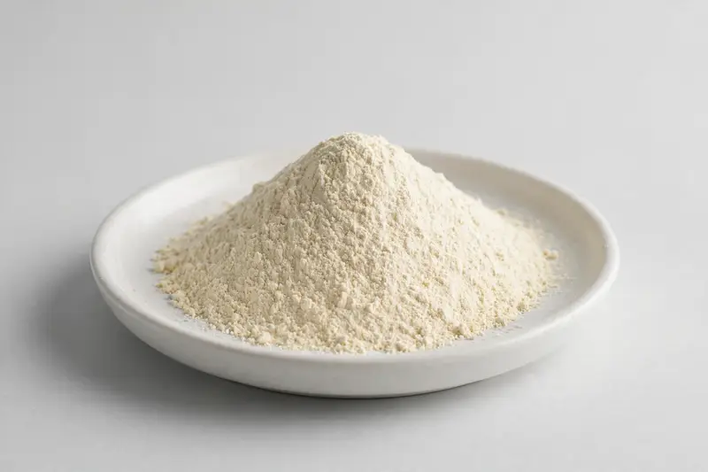

Pea protein — plant-based protein powder for sports nutrition and plant-protein formulations.

Overview
Pea protein powder is extracted from the seed of Pisum sativum and is one of the most widely used plant proteins in sports nutrition and plant-based food. Buyers most often request isolate grades in the 80-85% protein range, and some evaluate textured or concentrate options for different applications. Demand continues to grow with the plant-protein category across powders, bars and beverages. We source through vetted partner producers and confirm feasibility against your target spec.
Specifications below reflect commonly requested options in the market — not a stock list. Share your target spec and we'll confirm exactly what we can supply, honestly.
| Specification | Details |
|---|---|
| Botanical identity | Pea protein isolate powder |
| Marker compound | Commonly requested spec grades: 80-85% protein isolate; concentrate and textured options discussed per application |
| Appearance | Fine powder, color typical of the extract |
| Mesh size | Typically 80–100 mesh (confirm per inquiry) |
| Testing | COA/TDS arranged on request; scope agreed per your spec |
Applications
Documentation
We don't claim in-house labs or certifications we don't hold. COA and TDS documents can be arranged on request, and testing scope is agreed against your specification before supply.
FAQ
Related products
Papain (Carica papaya)
Key marker: USP activity units
View specs →Rutin (Sophora japonica)
Key marker: 95%+ HPLC
View specs →Hesperidin (Citrus spp.)
Key marker: Hesperidin 90-98%
View specs →Cocos nucifera
Key marker: Potassium
View specs →Citrus junos
Key marker: Hesperidin 10-40%
View specs →Send your target spec and volumes — we'll respond with a tailored quotation.
Request a Quote